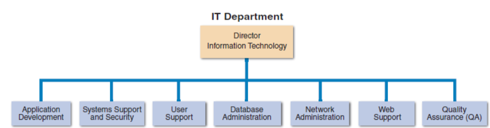

Introduction to Systems Analysis and Design
CC 207 A - Systems Analysis and Design
Impact of Information Technology
Companies use information as a weapon in the battle to increase productivity, deliver quality products and services, maintain customer loyalty, and make sound decisions. Information technology can mean the difference between success and failure.
Information Technology (IT) is a combination of hardware and software products and services that companies use to manage, access, communicate, and share information.
The IT journey in the 21st century continues with changes in the world, changes in technology, and changes in client demand.
Key IT Trends
Three major trends in information technology today are:
- Rapidly increasing globalization
- Technology integration for seamless information access
- Rapid growth of cloud-based computing and services
All trends are Internet-centric and driven by the immense power of the Web.
Systems Analysis and Design
Systems Analysis and Design is a step-by-step process for developing high-quality information systems.
Role of a Systems Analyst
A systems analyst:
- Plans, develops, and maintains information systems
- Manages IT projects, including tasks, resources, schedules, and costs
- Conducts meetings, delivers presentations, and writes memos, reports, and documentation
Information Systems and Components
System is a set of related components that produces specific results.
Mission-critical systems are vital to a company's operations.
Five Components of Information Systems
Information systems have five key components:
- Hardware - The physical layer of the information system (following Moore's Law)
- Software - Includes system software and application software (horizontal systems, vertical systems, and legacy systems)
- Data - Stored in tables that can be linked together to supply data
- Processes - Describe the tasks and business functions that users, managers, and IT staff members perform to achieve specific results
- People - Includes stakeholders and users or end users
Internet Business Strategies and Relationships
E-commerce or I-commerce refers to business conducted online through internet technologies.
Business Relationships
- B2C (Business-to-Consumer) - Online transactions between businesses and consumers
- B2B (Business-to-Business) - Online transactions between businesses, including EDI, supply chain management (SCM), and supplier relationship management (SRM)
Business Types
- Internet-dependent firms - Primary business depends on the Internet rather than a traditional business channel
- Brick-and-mortar firms - Have physical stores where customers can see and touch the products; many have expanded their Web-based marketing channels to increase sales and serve customers better
Key Takeaway
The Web-based business model has leveled the playing field for small firms that now can reach a global marketplace.
Business Profiles and Models
Business Profiles provide an overview of a company's mission, functions, organization, products, services, customers, suppliers, competitors, constraints, and future direction.
Business Processes are a specific set of transactions, events, and results that can be described and documented.
Business Process Model (BPM) graphically displays one or more business processes.
Business Information Systems
Old Way
- Administrative staff used office systems
- Operational people used operational systems
- Middle managers used decision support systems
- Top managers used executive information systems
New Way
- All employees use office productivity systems
- Operations users require decision support systems
Business Information Systems
Enterprise Computing Systems
Support company-wide operations and data management requirements. Examples include Wal-Mart's inventory control system, Boeing's production control system, and Hilton Hotels' reservation system. Applications called enterprise resource planning (ERP) systems provide cost-effective support for users and managers throughout the company.
Transaction Processing Systems
Process data generated by day-to-day business operations. Examples include customer order processing, accounts receivable, and warranty claim processing. A TP system verifies customer data, checks customer credit, checks stock status, posts to accounts receivable, adjusts inventory levels, and updates the sales file.
Business Support Systems
Provide job-related information support to users at all levels of a company. These systems can work hand-in-hand with transaction processing systems. An emerging technology in this area is RFID (Radio Frequency Identification), which uses high-frequency radio waves to track physical objects throughout shipping processes.
Knowledge Management Systems
Use a large database called a knowledge base to allow users to find information by entering keywords. These systems utilize inference rules, which are logical rules that identify data patterns and relationships to help users access relevant information efficiently.
User Productivity Systems
Technology that improves productivity for users across the organization. This includes groupware solutions that facilitate collaboration and communication. Most large companies require systems integration that combines transaction processing, business support, knowledge management, and user productivity features.
Key Takeaway
Most large companies require systems integration that combines transaction processing, business support, knowledge management, and user productivity features.
Organizational Structure and Information Needs
Information Needs by Organizational Level
- Top Managers - Develop long-range strategic plans; need information on economic forecasts, technology trends, competitive threats, and governmental issues
- Middle Managers and Knowledge Workers - Provide direction, necessary resources, and performance feedback to supervisors and team leaders; need more detailed information than top managers
- Supervisors and Team Leaders - Oversee operational employees and carry out day-to-day functions; need decision support information, knowledge management systems, and user productivity systems
- Operational Employees - Rely on TP systems to enter and receive data they need to perform their jobs
Systems Development Tools & Methods
Tools
- Modeling - Creating business models, requirements models, data models, object models, network models, and process models
- Prototyping - Creating early working versions of information systems; speeds up development but might lead to important decisions being made too early
- Computer-Aided Systems Engineering (CASE) Tools - Provide a framework for systems development and support a wide variety of design methodologies
Methods
- Structured Analysis - Traditional method organized into phases using the systems development life cycle (SDLC)
- Object-Oriented Analysis - More recent method where objects represent actual people, things, or events
- Agile/Adaptive Methods - Latest trend in software development using team-based effort broken down into cycles (see Agile Development under Software Engineering)
Other Development Methods
- Joint Application Development (JAD) - Focuses on team-based fact-finding
- Rapid Application Development (RAD) - A compressed version of the entire development process
Structured Analysis - SLDC
Systems Development Life Cycle (SDLC) is a series of phases that typically includes planning, analysis, design, implementation, and support and security.
SDLC Phases
- Systems Planning - Begins with a systems request that describes problems or desired changes; includes preliminary investigation and feasibility study
- Systems Analysis - Building a logical model of the new system using fact-finding techniques and various modeling approaches
- Systems Design - Creating a physical model that satisfies all documented requirements, designing user interface, and identifying outputs, inputs, and processes
- Systems Implementation - Constructing the new system, writing and testing programs, installing the system, and delivering a functional system
- Systems Support and Security - Ensuring the system is secure, reliable, maintainable, and scalable
Object-Oriented Analysis
IT Department and Systems Analyst Role
IT Department Functions
- Application Development - Systems developed by teams of users, managers, and IT staff
- Systems Support and Security - Providing vital protection and maintenance services
- User Support - Providing technical information, training, and productivity support
- Database Administration - Data design, management, security, backup, and access systems
- Network Administration - Hardware and software maintenance, support, and security
- Web Support - Designing Web pages, monitoring traffic, managing hardware and software
- Quality Assurance - Reviewing and testing applications and systems changes
Systems Analyst Skills and Knowledge
- Technical Knowledge - Understanding of hardware, software, and systems
- Communication Skills - Strong oral and written communication abilities
- Business Skills - Understanding of business operations and functions
- Critical Thinking Skills - Analysis, evaluation, and problem-solving abilities
Key Takeaway
An analyst's most valuable skill is the ability to listen. An effective analyst will involve users in every step of the development process.